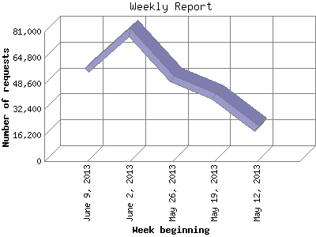

The Weekly Report identifies the activity for each week within the report
time frame. Remember that one page hit can result in several server requests
as the images for each page are loaded.
Note: Depending on the
report time frame for this report the first and last week may not represent
a full seven day week, resulting in lower hits.

| Week beginning | Number of requests | Number of page requests | |
|---|---|---|---|
| 1. | May 12, 2013 | 20,334 | 1,954 |
| 2. | May 19, 2013 | 40,341 | 3,560 |
| 3. | May 26, 2013 | 51,422 | 4,161 |
| 4. | June 2, 2013 | 80,736 | 6,312 |
| 5. | June 9, 2013 | 56,652 | 4,963 |
Most active week beginning June 2, 2013 : 6,312 pages sent. 80,736 requests handled.
Weekly average: 4,190 pages sent. 49,897 requests handled.
This report was generated on June 16, 2013 22:40.
Report time frame May 15, 2013 00:01 to June 15, 2013 23:52.
| Web statistics report produced by: analog 6.0 / Report Magic 2.21 |